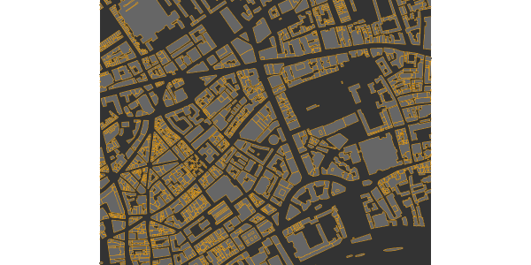
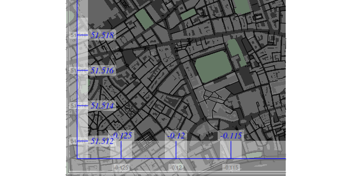

The R package osmplotr uses
OpenStreetMap (OSM) data to produce highly customisable maps. Data are
downloaded via the osmdata
package, and different aspects of map data - such as roads,
buildings, parks, or water bodies - are able to be visually customised.
This vignette demonstrates both data downloading and the creation of
simple maps. The subsequent vignette (‘data-maps’)
demonstrates how osmplotr enables user-defined data to be
visualised using OSM data. The maps in this vignette represent a small
portion of central London, U.K.
1. Introduction
A map can be generated using the following simple steps:
- Specify the bounding box for the desired region
- Download the desired data—in this case, all building perimeters.
dat_B <- extract_osm_objects (key = "building", bbox = bbox)- Initiate an
osm_basemapwith desired background (bg) colour
map <- osm_basemap (bbox = bbox, bg = "gray20")- Add desired plotting objects in the desired colour.
map <- add_osm_objects (map, dat_B, col = "gray40")- Print the map
print_osm_map (map)The function print_osm_map creates a graphics device
that is scaled to the bounding box of the map. Note also that
osmplotr maps contain no margins and fill the entire plot
area, reflecting the general layout of most printed maps. Additional
capabilities of osmplotr are described in the following
sections, beginning with downloading and extraction of data.
2. Downloading Data
The package osmdata
is used to download data from ‘OpenStreetMap’ using the ‘overpass’ API
overpass API. Data may be returned
in either ‘Simple
Features’ (sf) or ‘R Spatial’
(sp) form. osmplotr has a convenience
function, extract_osm_objects, to allow direct import, or
the functions of osmdata
can also be used directly.
Data of a particular type can be extracted by specifying the
appropriate OSM key, as in the above example:
bbox <- get_bbox (c (-0.13, 51.51, -0.11, 51.52))
dat_B <- extract_osm_objects (key = "building", bbox = bbox)
dat_H <- extract_osm_objects (key = "highway", bbox = bbox)These objects are of appropriate Spatial classes:
class (dat_B)## [1] "sf" "data.frame"
class (dat_H)## [1] "sf" "data.frame"
class (dat_B$geometry)## [1] "sfc_POLYGON" "sfc"
class (dat_H$geometry)## [1] "sfc_LINESTRING" "sfc"Spatial (sp)
objects may be returned with,
dat_B <- extract_osm_objects (key = "building", bbox = bbox, sf = FALSE)otherwise sf is used as the default format. The Simple
Features (sf) objects with polygons of London buildings and
linestrings of highways respectively contain
nrow (dat_B)## [1] 1767
nrow (dat_H)## [1] 1220… 1,759 building polygons and 1,133 highway lines.
extract_osm_objects also accepts key-value
pairs which are passed to the overpass
API :
dat_T <- extract_osm_objects (key = "natural", value = "tree", bbox = bbox)Trees are located by single coordinates and are thus point objects:
class (dat_T$geometry)## [1] "sfc_POINT" "sfc"
nrow (dat_T)## [1] 6882.1 osmdata
The osmdata
package provides a more powerful interface for downloading OSM data, and
may be used directly with osmplotr. The
osmplotr function extract_osm_objects is
effectively just a convenience wrapper around omsdata
functionality. The primary differences between the two are:
-
osmdatareturns all spatial data for a given query; that is, all points, lines, polygons, multilines, and multipolygons, whileosmplotrreturns a single specified geometric type. -
osmplotraccepts multiplekey-valuepairs in a single call toextract_osm_objects, which the equivalentosmdatafunction,add_feature, accepts only a singlekey-valuepair, with queries successively build through multiple calls toadd_feature.
These differences are illustrated in the following code which generates identical results in both cases (with namespaces explicitly given to aid clarity),
dat1 <- osmplotr::extract_osm_objects (
key = "highway", value = "!primary",
bbox = bbox
)
dat2 <- osmdata::opq (bbox = bbox) %>%
add_feature (key = "highway") %>%
add_feature (key = "highway", value = "!primary") %>%
osmdata_sf ()
dat2 <- dat2$osm_linesThe osmdata function opq() constructs an
overpass query, with successive calls to add_feature
extending the query until it is finally submitted to overpass by
osmdata_sf() (or the sp version
osmdata_sp()).
Note that add_feature() has to be called twice in this
case, because a single call to
add_feature (key = 'highway", value = "!primary") would
request all features that are not primary highways. The initial
query for key = "highway" ensures that only npn-primary
highways are returned.
2.2 Negation
As demonstrated above, negation can be specified by pre-pending
! to the value argument so that, for example,
all natural objects that are not trees can
be extracted with
dat_NT <- extract_osm_objects (bbox = bbox, key = "natural", value = "!tree")## Cannot determine return type; maybe specify explicitly?The message is generated because of course a request for anything
that is not a tree could be for any kind of spatial object.
osmplotr makes several educated guesses in the absence of
specified return types, but these can always be forced with the
return_type parameter:
pts_NT <- extract_osm_objects (
bbox = bbox, key = "natural", value = "!tree",
return_type = "points"
)london$dat_H contains all non-primary highways, and was
extracted with the call demonstrated above, while
london$dat_HP contains the corresponding set of exclusively
primary highways. An osmplotr request for
key = "highway" automatically returns line objects
(although, again, other kinds of objects may be forced through
specifying return_type).
2.3 Additional key-value pairs
Any number of key-value pairs may be passed to
extract_osm_objects. For example, a named building can be
extracted with
bbox <- get_bbox (c (-0.13, 51.50, -0.11, 51.52))
extra_pairs <- c ("name", "Royal.Festival.Hall")
dat <- extract_osm_objects (
key = "building", extra_pairs = extra_pairs,
bbox = bbox
)These data are stored in london$dat_RFH. Note that
periods or dots are used for white space, and in fact symbolise (in
grep terms) any character whatsoever. The polygon of a
building at a particular street address can be extracted with
extra_pairs <- list (
c ("addr:street", "Stamford.St"),
c ("addr:housenumber", "150")
)
dat <- extract_osm_objects (
key = "building", extra_pairs = extra_pairs,
bbox = bbox
)These data are stored as london$dat_ST. Note that
addresses generally require combining both addr:street with
addr:housenumber.
2.4 Downloading with osm_structures and
make_osm_map
The functions osm_structures and
make_osm_map aid both downloading multiple OSM data types
and plotting (with the latter described below).
osm_structures returns a data.frame of OSM
structure types, associated key-value pairs, unique
suffices which may be appended to data structures for storage purposes,
and suggested colours. Passing this list to make_osm_map
will return a list of the requested OSM data items, named through
combining the dat_prefix specified in
make_osm_map and the suffices specified in
osm_structures.
## structure key value suffix cols
## 1 building building BU #646464FF
## 2 amenity amenity A #787878FF
## 3 waterway waterway W #646478FF
## 4 grass landuse grass G #64A064FF
## 5 natural natural N #647864FF
## 6 park leisure park P #647864FF
## 7 highway highway H #000000FF
## 8 boundary boundary BO #C8C8C8FF
## 9 tree natural tree T #64A064FF
## 10 background gray20Many structures are identified by keys only, in which cases the values are empty strings.
osm_structures ()$value [1:4]## [1] "" "" "" "grass"The last row of osm_structures exists only to define the
background colour of the map, as explained below (4.3 Automating map
production).
The suffices include as many letters as are necessary to represent
all unique structure names. make_osm_map returns a list of
two components:
-
osm_datacontaining the data objects passed in theosm_structuresargument. Any existingosm_datamay also be submitted tomake_osm_map, in which case any objects not present in the submitted data will be appended to the returned version. Ifosm_datais not submitted, all objects inosm_structureswill be downloaded and returned. -
mapcontaining theggplot2map objects with layers overlaid according to the sequence and colour schemes specified inosm_structures
The data specified in osm_structures can then be
downloaded simply by calling:
dat <- make_osm_map (structures = osm_structures (), bbox = bbox)
names (dat)## [1] "osm_data" "map"
sapply (dat, class)## $osm_data
## [1] "list"
##
## $map
## [1] "gg" "ggplot"
names (dat$osm_data)## [1] "dat_BU" "dat_A" "dat_W" "dat_G" "dat_N" "dat_P" "dat_H" "dat_BO"
## [9] "dat_T"The requested data are contained in dat$osm_data. A list
of desired structures can also be passed to this function, for
example,
osm_structures (structures = c ("building", "highway"))## structure key value suffix cols
## 1 building building B #646464FF
## 2 highway highway H #000000FF
## 3 background gray20Passing this to make_osm_map will download only these
two structures. Finally, note that the example of,
osm_structures (structures = "grass")## structure key value suffix cols
## 1 grass landuse grass G #64A064FF
## 2 background gray20demonstrates that osm_structures converts a number of
common keys to OSM-appropriate key-value
pairs.
2.4.1 The london data of osmplotr
To illustrate the use of osm_structures to download
data, this section reproduces the code that was used to generate the
london data object which forms part of the
osmplotr package.
structures <- c (
"highway", "highway", "building", "building", "building",
"amenity", "park", "natural", "tree"
)
structs <- osm_structures (structures = structures, col_scheme = "dark")
structs$value [1] <- "!primary"
structs$value [2] <- "primary"
structs$suffix [2] <- "HP"
structs$value [3] <- "!residential"
structs$value [4] <- "residential"
structs$value [5] <- "commercial"
structs$suffix [3] <- "BNR"
structs$suffix [4] <- "BR"
structs$suffix [5] <- "BC"Suffices are generated automatically from structure names only, not
values, and the suffices for negated forms must therefore be specified
manually. The london data can then be downloaded by simply
calling make_osm_map:
london <- make_osm_map (structures = structs, bbox = bbox)$osm_dataThe requested data are contained in the $osm_data list
item. make_osm_map also returns a $map item
which is described below (see 4.3
Automating map production).
3. Downloading connected highways
The visualisation functions described in the second
osmplotr vignette (Data maps) enable
particular regions of maps to be highlighted. While it may often be
desirable to highlight regions according to a user’s own data,
osmplotr also enables regions to be defined by providing a
list of the names of encircling highways. The function which achieves
this is connect_highways, which returns a sequential matrix
of coordinates from those segments of the named highways which connected
continuously and sequentially to form a single enclosed space. An
example is,
highways <- c (
"Monmouth.St", "Short.?s.Gardens", "Endell.St", "Long.Acre",
"Upper.Saint.Martin"
)
highways1 <- connect_highways (highways = highways, bbox = bbox)Note the use of the regex
character ? which declares that the previous character is
optional. This matches both “Shorts Gardens” and “Short’s Gardens”, both
of which appear in OSM data.
class (highways1)## [1] "list"
length (highways1)## [1] 5
highways1 [[1]] [[1]]## lon lat
## 1678452807 -0.1270287 51.51370
## 2265298898 -0.1270523 51.51362
## 438170687 -0.1270865 51.51347
## 3192197694 -0.1270902 51.51345
## 9513062 -0.1271692 51.51288The extraction of bounding polygons from named highways is not
fail-safe, and may generate various warning messages. To understand the
kinds of conditions under which it may not work, it is useful to examine
connect_highways in more detail.
3.1 connect_highways in detail
connect_highways takes a list of OpenStreetMap highways
and sequentially connects closest nodes of adjacent highways until the
set of named highways connects to form a cycle. Cases where no circular
connection is possible generate an error message. The routine proceeds
through the three stages of,
Adding intersection nodes to junctions of ways where these don’t already exist
Filling a connectivity matrix between the listed highways and extracting the longest cycle connecting all of them
Inserting extra connections between highways until the length of the longest cycle is equal to
length (highways).
This procedure can not be guaranteed fail-safe owing both to the
inherently unpredictable nature of OpenStreetMap, as well as to the
unknown relationships between named highways. To enable problematic
cases to be examined and hopefully resolved,
connect_highways has a plot option:
bbox_big <- get_bbox (c (-0.15, 51.5, -0.10, 51.52))
highways <- c (
"Kingsway", "Holborn", "Farringdon.St", "Strand",
"Fleet.St", "Aldwych"
)
highway_list <- connect_highways (
highways = highways, bbox = bbox_big,
plot = TRUE
)## Warning: Cycle unable to be extended through all waysThe plot depicts each highway in a different colour, along with
numbers at start and end points of each segment. This plot reveals in
this case that highway#6 (“Aldwych”) is actually nested within two
components of highway#4 (“Strand”). connect_highways
searches for the shortest path connecting all named highways, and since
“Strand” connects to both highways#1 and #5, the shortest path excludes
#6. This exclusion of one of the named components generates the warning
message.
These connected polygons returned from connect_highways
can then be used to highlight the enclosed regions within maps, as
demonstrated in the second vignette, ‘Data Maps’.
4. Producing maps
Maps will generally contain multiple kinds of OSM data, for example,
dat_B <- extract_osm_objects (key = "building", bbox = bbox)
dat_H <- extract_osm_objects (key = "highway", bbox = bbox)
dat_T <- extract_osm_objects (key = "natural", value = "tree", bbox = bbox)As illustrated above, plotting maps requires first making a basemap
with a specified background colour. Portions of maps can also be plotted
by creating a basemap with a smaller bounding box.
bbox_small <- get_bbox (c (-0.13, 51.51, -0.11, 51.52))
map <- osm_basemap (bbox = bbox_small, bg = "gray20")
map <- add_osm_objects (map, dat_H, col = "gray70")
map <- add_osm_objects (map, dat_B, col = "gray40")map is then a ggplot2 which may be viewed
simply by passing it to print_osm_map:
print_osm_map (map)Other graphical parameters can also be passed to
add_osm_objects, such as border colours or line widths and
types. For example,
map <- osm_basemap (bbox = bbox_small, bg = "gray20")
map <- add_osm_objects (map, dat_B,
col = "gray40", border = "orange",
size = 0.2
)
print_osm_map (map)
The size argument is passed to the corresponding
ggplot2 routine for plotting polygons, lines, or points,
and respectively determines widths of lines (for polygon outlines and
for lines), and sizes of points. The col argument
determines the fill colour of polygons, or the colour of lines or
points.
map <- add_osm_objects (map, dat_H, col = "gray70", size = 0.7)
map <- add_osm_objects (map, dat_T, col = "green", size = 2, shape = 1)
print_osm_map (map)Note also that the shape parameter determines the point
shape, for details of which see ?ggplot2::shape. Also note
that plot order affects the final outcome, because components are
sequentially overlaid and thus the same map components plotted in a
different order will generally produce a different result.
4.1 Saving Maps
The function print_osm_map() can be used to print either
to on-screen graphical devices or to graphics files (see, for example,
?png for a list of possible graphics devices). Sizes and
resolutions of devices may be specified with the appropriate parameters.
Device dimensions are scaled by default to the proportions of the
bounding box (although this can be over-ridden).
A screen-based device simply requires
print_osm_map (map)while examples of writing higher resolution versions to files include:
print_osm_map (map,
filename = "map.png", width = 10,
units = "in", dpi = map_dpi
)
print_osm_map (map,
filename = "map.eps", width = 1000,
units = "px", dpi = map_dpi
)
print_osm_map (map, filename = "map", device = "jpeg", width = 10, units = "cm")4.2 Plotting different OSM Structures
The ability demonstrated above to use negation in
extract-osm-objects allows different kinds of the same
object to be visually contrasted, for example primary and non-primary
highways:
dat_HP <- extract_osm_objects (key = "highway", value = "primary", bbox = bbox)
dat_H <- extract_osm_objects (key = "highway", value = "!primary", bbox = bbox)
map <- osm_basemap (bbox = bbox_small, bg = "gray20")
map <- add_osm_objects (map, dat_H, col = "gray50")
map <- add_osm_objects (map, dat_HP, col = "gray80", size = 2)
print_osm_map (map)The additional key-value pairs demonstrated above (for
Royal Festival Hall, dat_RFH and 150 Stamford Street,
dat_ST) also demonstrated above allow for highly customised
maps in which distinct objects are plotting with different colour
schemes.
bbox_small2 <- get_bbox (c (-0.118, 51.504, -0.110, 51.507))
map <- osm_basemap (bbox = bbox_small2, bg = "gray95")
map <- add_osm_objects (map, dat_H, col = "gray80")
map <- add_osm_objects (map, dat_HP, col = "gray20", size = 2)
map <- add_osm_objects (map, dat_RFH, col = "orange", border = "red", size = 2)
map <- add_osm_objects (map, dat_ST, col = "skyblue", border = "blue", size = 2)
print_osm_map (map)4.3 Filling within boundary lines
Different portions of a map may sometimes be delineated by lines, for
example with coastlines which are always represented in OpenStreetMap as
lines. Plotting the water or land either side of a coastline in a single
block of colour requires the regions to be polygons, not lines.
osmplotr has a function osm_line2poly() which
converts boundary lines extending beyond a given bounding box into
polygons encircling the perimeter of the bounding box. An example is
given in ?osm_line2poly, using both the
osmdata package to obtain the bounding box of a named
region, and the magrittr pipe operator.
library (osmdata)
bb <- osmdata::getbb ("melbourne, australia")
coast <- extract_osm_objects (
bbox = bb, key = "natural", value = "coastline",
return_type = "line"
)
coast <- osm_line2poly (coast, bbox = bb)
map <- osm_basemap (bbox = bb) %>%
add_osm_objects (coast [[1]], col = "lightsteelblue") %>%
print_osm_map ()The osm_line2poly() function returns a list of two
sf polygons. For coastline, one of these will correspond to
water, one to land. In the preceding example, the first polygon is the
ocean, which is coloured in "lightsteelblue". Users must
determine for themselves which polygon is to be plotted in which colour.
Note that osm_line2poly() only accepts
sf-formatted data, and not sp.
4.4 Automating map production
As indicated above (2.4 Downloading
with osm_structures and make_osm_map), the
production of maps overlaying various type of OSM objects is facilitated
with make_osm_map. The structure of a map is defined by
osm_structures as described above.
Producing a map with customised data is as simple as,
structs <- c ("highway", "building", "park", "tree")
structures <- osm_structures (structures = structs, col_scheme = "light")
dat <- make_osm_map (structures = structures, bbox = bbox_small)
print_osm_map (dat$map)
Calling make_osm_map() downloads the requested
structures within the given bbox and returns a list of two
components, the first of which contains the downloaded data:
names (dat)## [1] "osm_data" "map"
names (dat$osm_data)## [1] "dat_B" "dat_H" "dat_P" "dat_A" "dat_P" "dat_T"Pre-downloaded data may also be passed to
make_osm_map()
dat <- make_osm_map (
structures = structures, osm_data = dat$osm_data,
bbox = bbox
)
print_osm_map (dat$map)Note that omitting the bounding box argument (bbox)
produces a map with a bounding box is extracted as the
largest box spanning all objects in
osm_data. This may be considerably larger than the desired
boundaries, particularly because highways are returned by
overpass in their entirety, and will generally extend well
beyond the specified bounding box.
Finally, objects in maps are overlaid on the plot according to the
order of rows in osm_structures, with the single exception
that background is plotted first. This order can be readily
changed or restricted simply by submitting structures in a desired
order.
structs <- c ("amenity", "building", "highway", "park")
osm_structures (structs, col_scheme = "light")## structure key value suffix cols
## 1 amenity amenity A #DCDCDCFF
## 2 building building B #C8C8C8FF
## 3 highway highway H #969696FF
## 4 park leisure park P #C8DCC8FF
## 5 background gray954.5 Axes
Axes may be added to maps using the add_axes function.
In contrast to many R packages for producing maps, maps in
osmplotr fill the entire plotting space, and axes are added
internal to this space. The separate function for adding axes
allows them to be overlaid on top of all previous layers.
Axes added to a dark version of the previous map look like this:
structures <- osm_structures (structures = structs, col_scheme = "dark")
dat <- make_osm_map (
structures = structures, osm_data = dat$osm_dat,
bbox = bbox_small
)
map <- add_axes (dat$map, colour = "black")Note that, as described above, make_osm_map returns a
list of two items: (i) potentially modified data (in
$osm_data) and (ii) the map object (in $map).
All other add_ functions take a map object as one argument
and return the single value of the modified map object.
print_osm_map (map)This map reveals that the axes and labels are printed above
semi-transparent background rectangles, with transparency controlled by
the alpha parameter. Axes are always plotted on the left
and lower side, but positions can be adjusted with the pos
parameter which specifies the positions of axes and labels relative to
entire plot device
map <- add_axes (map,
colour = "blue", pos = c (0.1, 0.2),
fontsize = 5, fontface = 3, fontfamily = "Times"
)
print_osm_map (map)
The second call to add_axes overlaid additional axes on
a map that already had axes from the previous call. This call also
demonstrates how sizes and other font characteristics of text labels can
be specified.
Finally, the current version of osmplotr does not allow
text labels of axes to be rotated. (This is because the semi-transparent
underlays are generated with ggplot2::geom_label which
currently prevents rotation.)
Click on the following link to proceed to the second
osmplotr vignette: Data maps